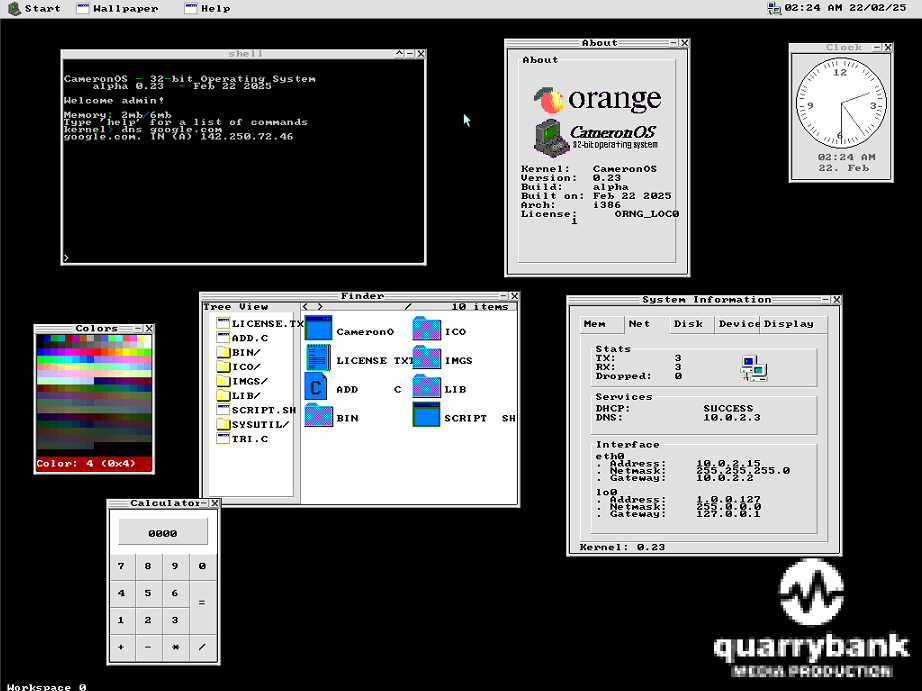

recent projects
C, C++, Assembly (previously C#, COSMOS)

- x86 32-bit hobby operating system featuring graphical user interface
- custom VBE video driver to drive real hardware compatability instead of virtual machines
- multitasking apps and basic DHCP networking
8bit-bmp-2-c (Github)
Python
- converts 8-bit indexed BMPs to C unsigned char arrays
- generates C header file with image data, dimensions
stem_ripper (Github)
Python
- converts .mp3/.wav files to 4-stems using DEMUCS as wrapper
- provides process duration, uses CUDA GPU to process (if avail)
JavaScript
- Discord bot for displaying heraldic shields based on user-input blazons using the DrawShield API
- other heraldic features such as mottos, supporters, etc
see more on
my Github here or
go home.